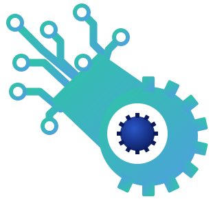

STEAMWorkz cyber rigRig visualizers
Design-time sims and renders of the rig, made while planning it. They run in the browser on their own; nothing here talks to the hardware.
Simulator
Edgerunner Rig Sim
The CLUE watch, its screen and both lenses running the real mode code, including the Octlet.AI virus takeover. Shows the original wired layout (Bluefruit + Express).
3D configuratorCyber headgear configurator
Orbit an LED cap, headphones, goggles or standalone ears in 3D, with cat-ear mounts, lighting modes and an exploded view.
Concept boardLit cartridge respirator
The rebreather concept: light pods in place of filter cartridges, the CLUE on the nose, and the pod build stack.
GameByte vs BUG.EXE
Hit BUG.EXE 8 times, one per bit, before it eats the six Octlet bytes. A STEAMWorkz Code Lab game about bits, bytes and RGB.